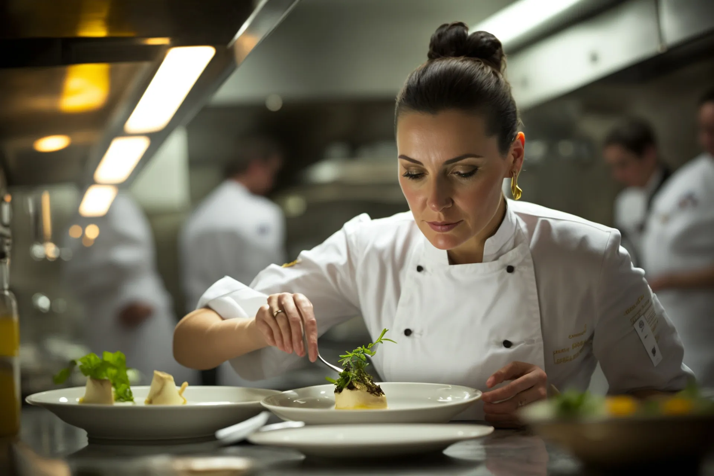

À propos de nous
ZATIL Recettes est né de la passion pour la cuisine et le partage. Notre mission est de rendre la cuisine accessible à tous, des débutants aux chefs expérimentés.
Notre histoire
Fondé en 2020 pendant le confinement, notre site a commencé comme un simple blog de recettes partagées entre amis. Aujourd'hui, nous sommes une communauté de milliers de passionnés de cuisine.
Notre philosophie
Nous croyons que la cuisine devrait être un plaisir, pas une corvée. Nos recettes sont testées et approuvées pour garantir des résultats délicieux à chaque fois.
Notre équipe

Chef Jean
Spécialiste de la cuisine Congolaise

Chef Maria
Experte en cuisine Congolaise